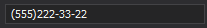
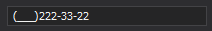
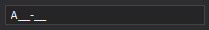

Mask Type: Simple
The Simple mask type allows users to enter alphabetic, numeric or alphanumeric characters at specific positions. For example, phone numbers, zip codes, and social security numbers.
Metacharacters
A metacharacter specifies a range of characters that users can enter. The following table lists the available metacharacters.
| Character | Description |
|---|---|
L |
A mandatory alphabetic character. For example, A-Z, a-z for the U.S. |
l |
An optional alphabetic character. |
A |
A mandatory alphanumeric character. For example, A-Z, a-z, 0-9 for the U.S. |
a |
An optional alphanumeric character. |
C |
A mandatory arbitrary character. |
c |
An optional arbitrary character. |
0 |
A mandatory numeric character. |
9 |
An optional numeric character. |
# |
An optional numeric character, the plus or minus sign. |
Special Characters
Special characters convert to uppercase/lowercase, add date/time separators, etc. The following table lists the available special characters.
| Character | Description |
|---|---|
> |
Converts subsequent characters to uppercase. |
< |
Converts subsequent characters to lowercase. |
<> |
Discards case conversion for subsequent characters. |
/ |
Separates months, days, and years. The culture’s DateSeparator property specifies the actual character. |
: |
Separates hours, minutes, and seconds. The culture’s TimeSeparator property specifies the actual character. |
$ |
Inserts the currency symbol. The culture’s CurrencySymbol property specifies the actual character. |
Literal Characters
Literal characters are arbitrary read-only characters in the editor. If you add a character that is not a meta or special character into a mask expression, the character is displayed in the editor as is. To display a meta or special character as a literal, precede it with a backslash.
Examples
Example 1
(000)000-00-00 - a mask that allows users to enter a phone number. Each '0' metacharacter
requires a user to enter a digit. Dashes and brackets are literals.
Value is not entered:

Value is entered:

Example 2
(999)000-00-00 - a phone number with an optional area code. Each '9' metacharacter allows
users to omit a digit.
Value is a valid phone number without a code part:

Example 3
\A>LL-00 - a mask to enter two upper-case letters and two numbers separated by a dash and
preceded with the 'A' literal. A backslash precedes the literal to distinguish it from a
metacharacter.
Value is not entered:

Value is entered: